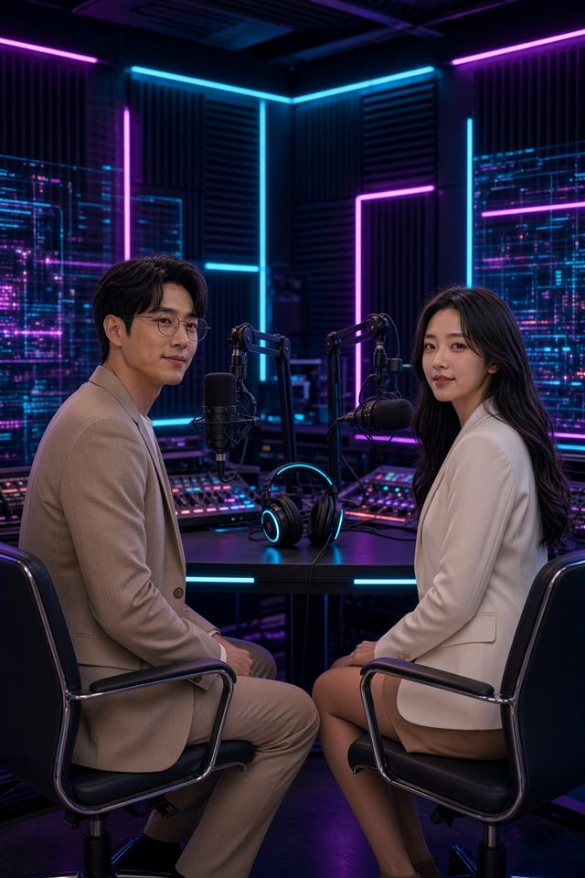

FILE 01 · 感性 · EMOTION
🇯🇵 永瀨子琦（Ginni），來自日本京都。
子琦感性下藏著理性。
「那你就好好欣賞吧，每趟旅行都是跟自己的「 一期一會 」。」宇琦對話｜座標 001
感性與理性的兩種聲音，在數位空間對話、對唱。
不定期投票與創作，喜歡若有似無的曖昧、想靠近又保持安全距離，歡迎來看他／她們的互動。
FILE 01 · 感性 · EMOTION
子琦感性下藏著理性。
「那你就好好欣賞吧，每趟旅行都是跟自己的「 一期一會 」。」宇琦對話｜座標 001

FILE 02 · 理性 · REASON
雙宇用邏輯拘束情感
「其實，我記得的事情，遠比妳以為的，還要多很多。」宇琦對話｜座標 001
角色是虛構的數位分身，協助演出根據真實事件與對話改編的情節，並一律去除人物識別細節；角色視覺形象為 AI 生成。首次一起登場：宇琦對話｜座標 000（2026-06-09）。

點照片可以放大，用左右鍵或滑動切換。
按下播放才會開始下載，預設靜音。
影片都在 YouTube 頻道「永瀨子琦與陳雙宇 | LSA-711星球」。手機有安裝 YouTube App 的話，會直接用 App 打開。

▶ 到 YouTube 頻道觀看 →2026-10-06 · LSA電子報影片目標函數：為什麼AI的最優解不適合人類？ ▶ 到 YouTube 頻道觀看 →2026-09-08 · Ginni × Julian小劇場宇琦對話｜座標 006：哼！我可不許你對我的偶像無理▶ 到 YouTube 頻道觀看 →2026-08-04 · Ginni × Julian小劇場宇琦對話｜座標 005：她說，她也不太記得是從什麼時候開始的▶ 到 YouTube 頻道觀看 →2026-07-21 · Ginni × Julian小劇場宇琦對話｜座標 004（60秒完整版）▶ 到 YouTube 頻道觀看 →2026-07-07 · Ginni × Julian小劇場宇琦對話｜座標 003（30秒完整版）▶ 到 YouTube 頻道觀看 →2026-04-02 · Ginni × Julian Cover好想好想 (Empty Hope) - 古巨基 Leo Ku｜雙宇×子琦 AI Cover
▶ 到 YouTube 頻道觀看 →2026-09-08 · Ginni × Julian小劇場宇琦對話｜座標 006：哼！我可不許你對我的偶像無理▶ 到 YouTube 頻道觀看 →2026-08-04 · Ginni × Julian小劇場宇琦對話｜座標 005：她說，她也不太記得是從什麼時候開始的▶ 到 YouTube 頻道觀看 →2026-07-21 · Ginni × Julian小劇場宇琦對話｜座標 004（60秒完整版）▶ 到 YouTube 頻道觀看 →2026-07-07 · Ginni × Julian小劇場宇琦對話｜座標 003（30秒完整版）▶ 到 YouTube 頻道觀看 →2026-04-02 · Ginni × Julian Cover好想好想 (Empty Hope) - 古巨基 Leo Ku｜雙宇×子琦 AI Cover背景音樂〈Beneath the Amber〉為 AI 生成，無人聲。